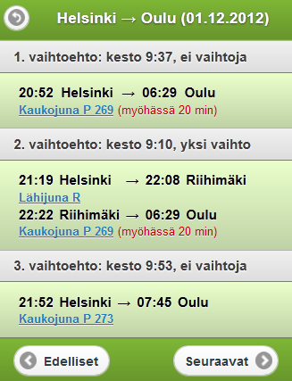
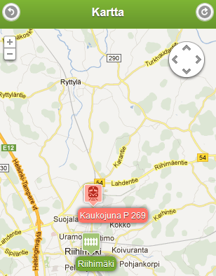

www.junat.info
Mobiilikäyttöliittymä junien aikatauluhakuihin


Mikä se on?
Mobiilikäyttöön suunniteltu junien aikatauluhakupalvelu
Ominaisuudet pähkinänkuoressa
- Junien aikatauluhaku
- Näppärä hakunäkymä kaikista Suomen juna-asemista
- Muistaa käyttäjän hakuhistorian
- Realiaikaista tietoa mahdollisista aikataulumuutoksista sekä junien nykyisestä sijainnista ja nopeudesta
Miten se toimii?
- Taustapalvelin on Herokussa pyörivä Node.js -instanssi
-
Datalähteinä on käytetty VR:n aikatauluhakua sekä Junat kartalla -rajapintojen eri syötteitä
- Nämä tiedot yhdistetään ja näytetään reaaliaikaista tietoa junan mahdollisesta myöhästymisestä sekä sen nykyisestä sijainnista kartalla